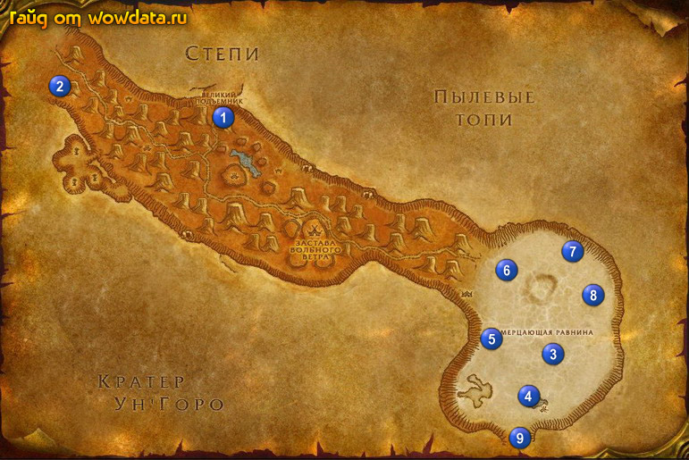

1) Когда спуститесь на лифте, справа будет мертвый парень 1 (31, 24), заберите у него книгу, которая начинает <Дневник Хмурня>. теперь откройте пункт полета в западной части локации 2 (8,18), это внутри зоны Фералас. Это сэкономит вам много времени в дальнейшем. Тут же закончите <Дневник Хмурня> у Хранитель дорог Фалфиндел.
2) Вы должны быть почти 33 лвл, бегите в 3 Мерцающая равнина.
3) Закончите <Братья Латунный Болт> 3 (78, 77), начните <Крепкие панцири> и <Яд Соляных равнин>.
4) Подойдите к дварфу рядом и начните у него <Обломки болидов>, <Управляющий пристанью Головокружилкинc> и <Хеминг Эрнестуэй младший>.
5) Пройдите на восток и начните <Уменьшение веса> 3 (80, 75).
6) Начните <Помехи на трассе> 3 (82, 78).
7) Детали для <Обломки болидов> валяются по всей локации, так что собирайте их пока делаете другие квесты, стервятники для <Уменьшение веса>, также повсюду, бейте их как увидите.
8) Идите на юг бить василисков 4 (76, 87) для <Помехи на трассе>.
9) Бейте скорпионов 5 (71, 74 и севернее) для <Яд Соляных равнин>.
10) Бейте василисков 6 (73, 59) для <Помехи на трассе>.
11) Бейте черепах 7 (82, 54) для <Крепкие панцири>.
12) Остановитесь 8 (86, 66) и доделайте <Уменьшение веса>.
13) Бегите назад в поселение 3 (77, 77) и закончите <Обломки болидов>.
14) У двух гномов рядом закончите <Яд Соляных равнин> и <Крепкие панцири>, затем начните <Мартек Изгой>.
15) На востоке (80, 75) закончите <Уменьшение веса>, начните <Гоблинская поддержка>.
16) Закончите <Помехи на трассе> (81, 77).
17) Идите на юг в Танарис 9 и откройте пункт полета в Прибамбасск.
18) Вернитесь по руне в Стальгорн, летите в Гавань Менетил, сядьте на корабль в Пустоши откройте там пункт полета и летите в Когтистые горы.
19) Когда прилетите начните <Возвращение Обугленной долины> (если вы видите что обгоняете гайд, то на этот квест можно забить) около колодца, затем делайте его в , пока бежите в Пустоши.